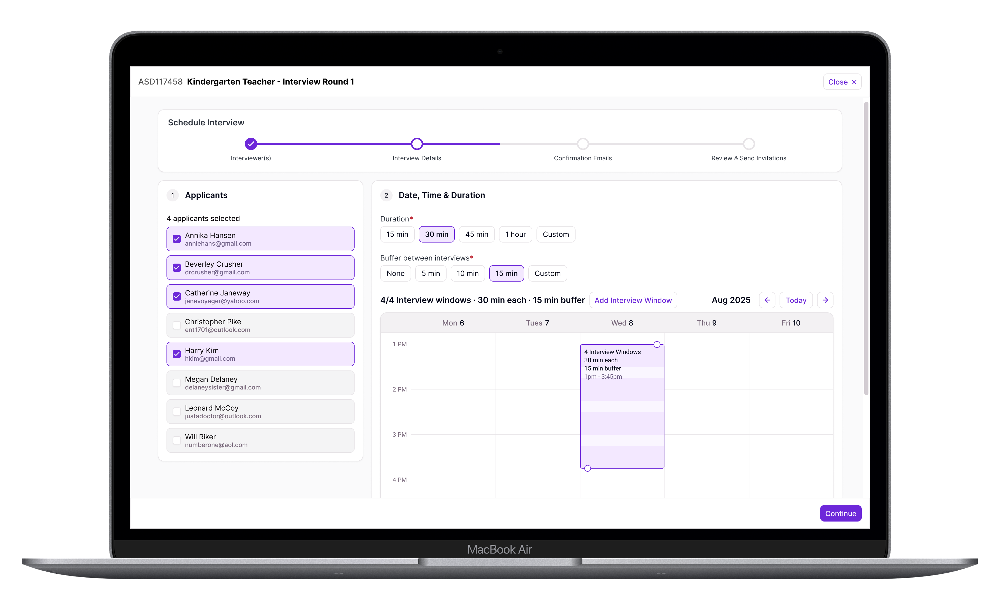
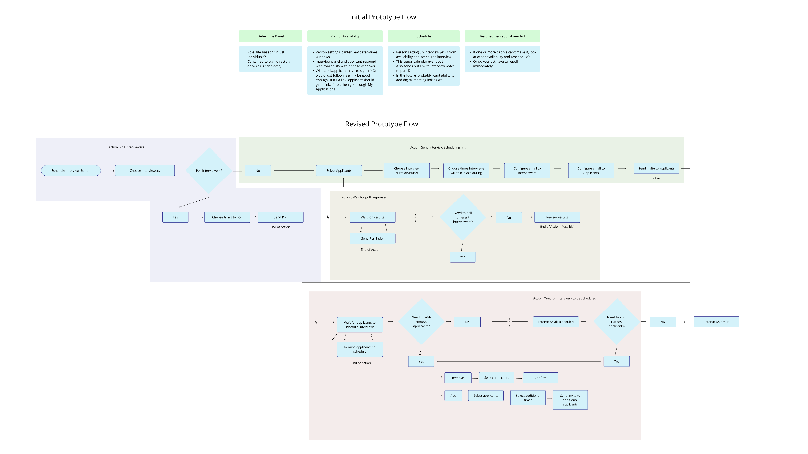
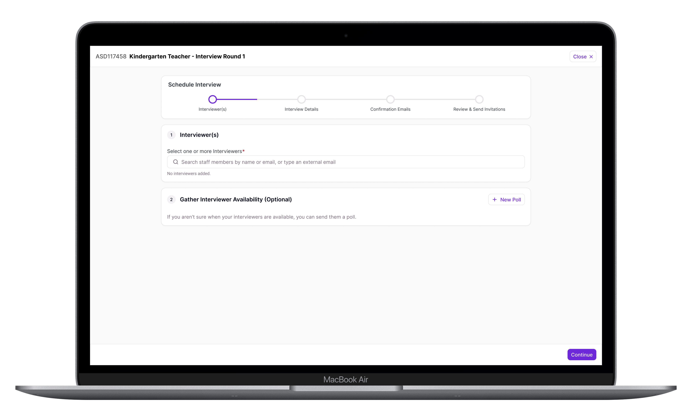

Frontline Education - Recruiting & Hiring
Interview Scheduling
Streamlining a very manual and time-intensive process into a single smooth flow.
Led generative research, created a prototype using AI tooling, tested said prototype, and iterated until we had a polished solution.
Scheduling interviews is one of the most time-consuming parts of the hiring process. The old version of Recruiting & Hiring only partially addressed this, and solving it fully would drive adoption of the new version.
The first prototype was built on a coordination model no district actually uses. Two calls into the testing round, it was clear we had to rework our prototype and approach.
98% of districts on the new Recruiting & Hiring now use the scheduler, compared to just under 60% using the legacy version equivalent. It's become a strong selling point.

Context
Recruiting & Hiring is an applicant tracking system, and it was being rebuilt from the ground up. The legacy version was nearly twenty years old, and it was time to modernize. This was a years-long effort, going through extensive planning and development phases. In the new version, each job posting gets a hiring funnel made of configurable stages, and one of those stage types is Interview. Initially, that label didn't mean much. To schedule interviews for the applicants in Interview stages, admins had to manually coordinate with panelists and applicants, requiring significant manual effort.
That mattered commercially. Roughly half the customers still on the legacy product used its existing interview management consistently, and a rebuild that couldn't do interviews gave them a reason not to move to the new product. This was first and foremost a sales and migration roadblock. We had to move quickly to not just achieve parity with the legacy version, but create a next-gen experience that removed as much manual work as possible.
Why Scheduling
The work started with generative research across school districts. The product manager on the project and I wrote up a research plan and met with customers to learn about their current process. We were looking to identify pain points and separate nice-to-haves from essentials. Districts didn't agree on what hurt most — one named room availability, another background check turnaround, another inconsistency between hiring managers. But scheduling kept coming back, and it sat upstream of most of the others.
The typical story we were told was a coordinator works out who should conduct the interview, chases their availability by phone or email, then contacts applicants once there's a window. If things don't line up, or the interviewer drops, the whole sequence restarts. This amounts to a lot of manual, time-consuming work. My first thought was to integrate calendars into the product, however most districts don't have processes and infrastructure to make that useful.
AI Powered Prototype
I looked at how scheduling works in other products to understand what conventions users might be used to, then built a clickable prototype in Lovable — intentionally rough, closer to a wireframe than a finished interface, since its job was to give district administrators something concrete to react to. Building it in an AI tool meant I could rebuild it between sessions instead of between rounds, which turned out to be important.
When you assume...
The first version of the prototype had the coordinator select interviewers and applicants on the same screen, poll everyone at once, and schedule wherever availability overlapped. The thought was to get both processes moving in parallel.
After two calls I realized we had missed some key things in our initial round of discovery. Interviews are almost always conducted by a panel, and getting a panel into one room is difficult, so districts book a single block and run every candidate through it back to back. Districts aren't interested in catering to candidates. If one or more can't make the times that the interviewers are available, they're out of luck. Additionally, the person setting up interviews sometimes just tells the interviewers when to be there, and it's expected that they'll show up.
A flow that required a poll would be dead weight for a meaningful share of the customer base. When interviewer availability was a consideration, it was a question of whether Monday or Tuesday worked better, not whether they were available at noon, one, or two. Thanks in part to the AI tooling, I was able to rebuild the prototype between sessions and tested the new version on the remaining districts.

A quick fix
The new structure separated the steps: select interviewers and (optionally) poll their availability, select applicants, configure interview details (date, time, and location), set up confirmation emails, then review and send. This is where the scheduler's job ends. Applicants receive a link and book their own slot; once they do, the system sends confirmations to the applicant and the interviewers with a calendar file attached.
A New Problem
Splitting the steps introduced an ambiguity I hadn't anticipated. Users now saw two calendars in one flow — one for polling interviewer availability, one showing the slots offered to applicants — and several read the first as scheduling the actual interviews.
The fix was two-part: I replaced the tab structure with a stepper, so the sequence reads as a process with a position in it, and I hid the first calendar unless a user explicitly started a poll for interviewers. This allowed users who needed the poll to engage with it while allowing others to proceed without seeing a calendar interface they didn't actually need. The changes increased user clarity and the success rate of the test.

Technical Snag
Every district has interviewers outside the system — a co-op employee with a district email who isn't in the staff directory, a partner district's administrator on a panel, etc. Sending them emails and giving them access to the polling interface added a good deal of work for Engineering. I trimmed the experience down in order to release a usable version of the scheduler within the project timeline, and worked with Engineering and Product to work out a plan to release a complete version as a fast follow.
Outcome
98% of districts on the new Recruiting & Hiring are using the interview scheduler — close to universal adoption among the districts who have it. The old process, whether using the old R&H feature or some other solution, involved a lot of manual steps and time. The new process automates everything possible and vastly reduces the time scheduling takes on average. In testing, districts estimated this would take scheduling from a multi-hour task down to under half an hour. It also moved sales conversations, which was the original business case — the feature was prioritized because its absence was a reason for legacy customers to avoid upgrading to the new version of Recruiting & Hiring.